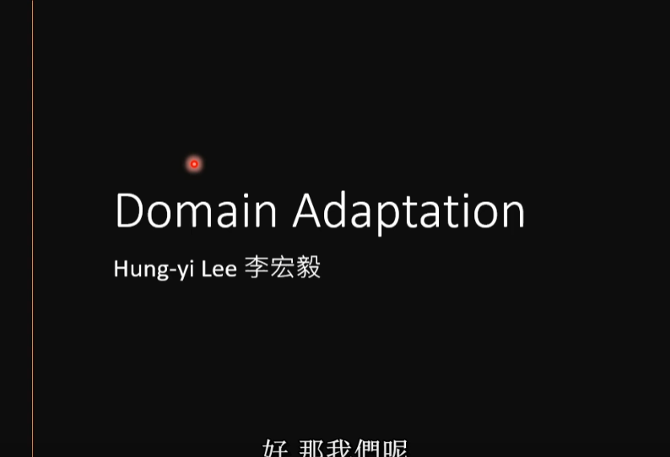
本幻灯片节选自李宏毅 (Hung-yi Lee) 教授关于深度学习领域中的 Domain Adaptation (领域适应) 专题课程。
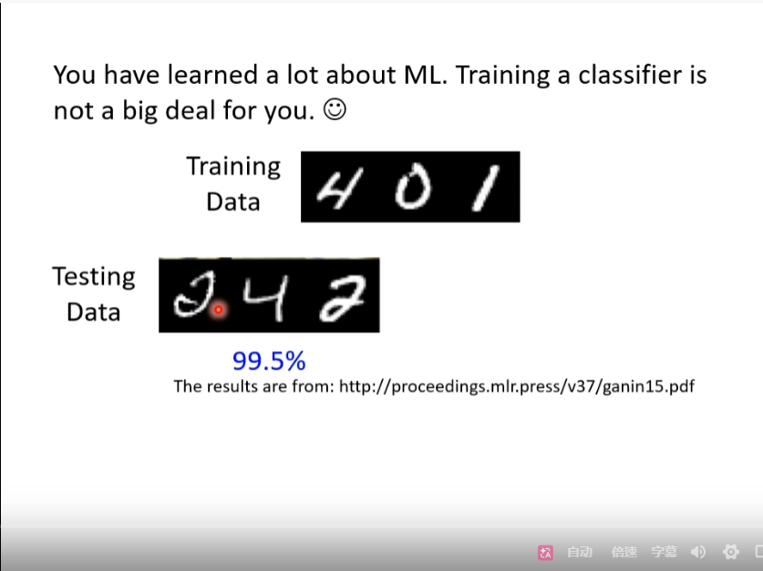
本幻灯片以 MNIST 手写数字分类为例，展示了典型的机器学习瓶颈：
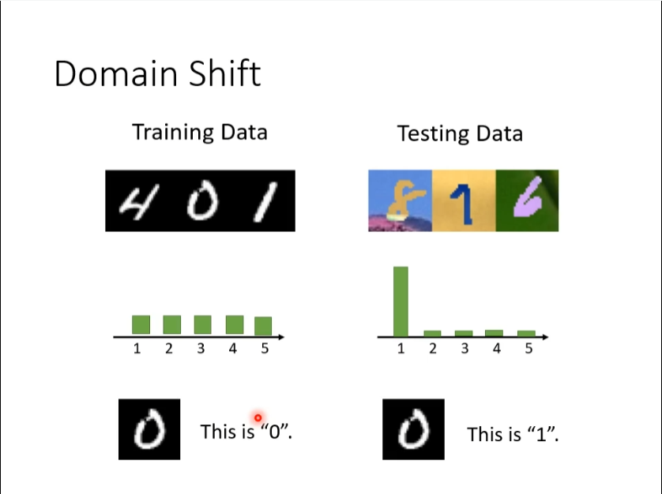
除了视觉上的领域差异，训练数据与测试数据在标签分布 (Label Distribution) 上也可能存在重大差异：
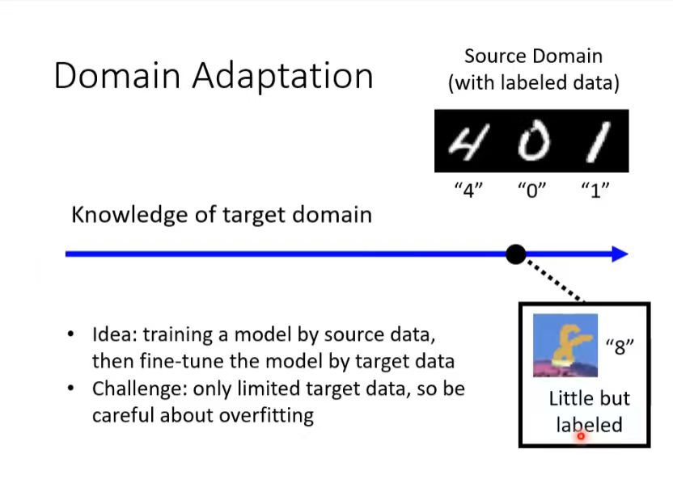
该图演示了在目标域拥有少量已标注数据时的领域适应策略：
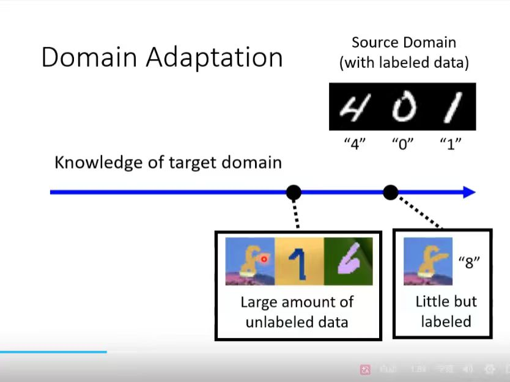
该幻灯片定义了领域适应中关于“目标域知识”获取的连续谱系：
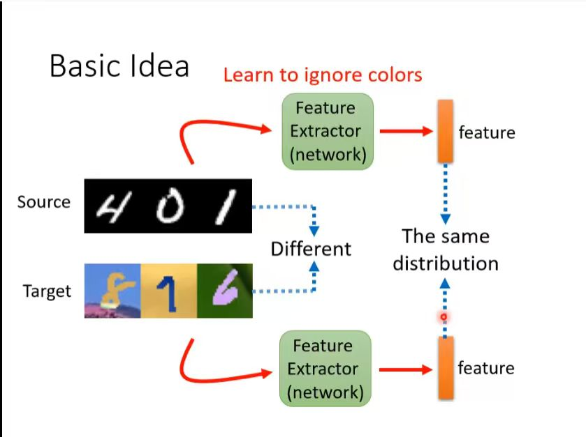
该幻灯片阐述了领域适应的核心方法论：
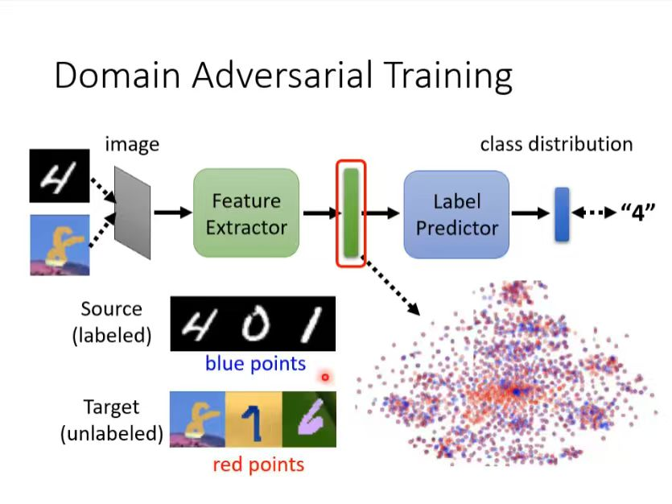
该幻灯片展示了如何通过对抗手段实现域对齐：
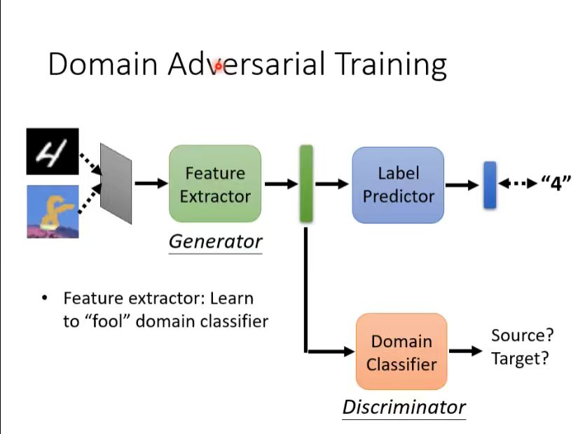
该幻灯片细化了对抗性领域适应的架构逻辑：
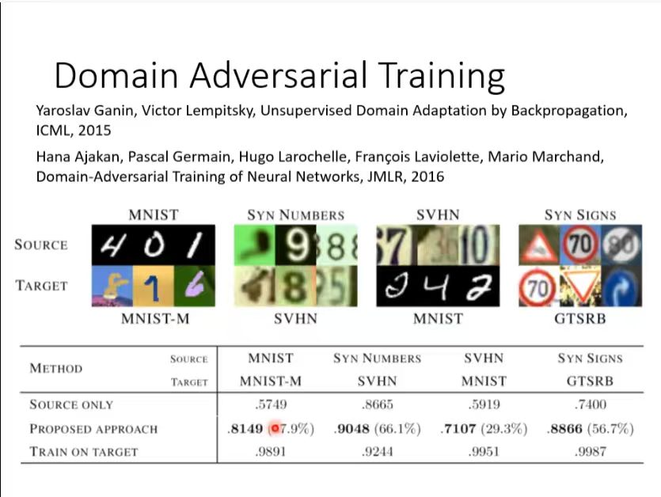
本幻灯片汇总了领域对抗训练 (DANN) 在多种经典任务下的迁移表现：
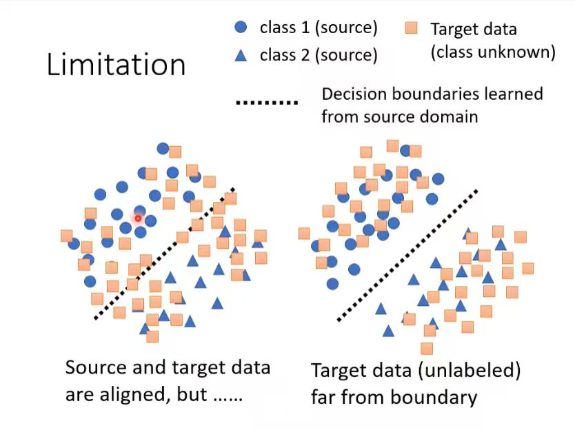
该幻灯片指出了单纯使用对抗学习进行特征对齐的局限性：
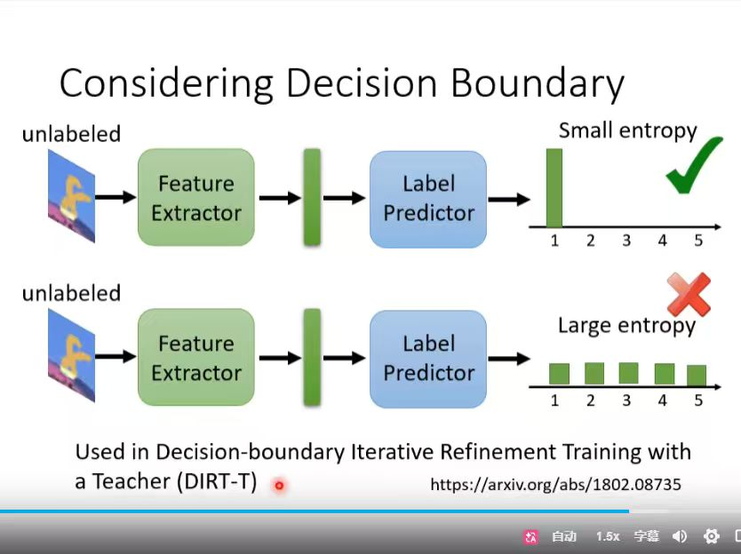
针对对抗训练无法保证边界质量的问题，DIRT-T (Decision-boundary Iterative Refinement with a Teacher) 提出了更优的解决方案：
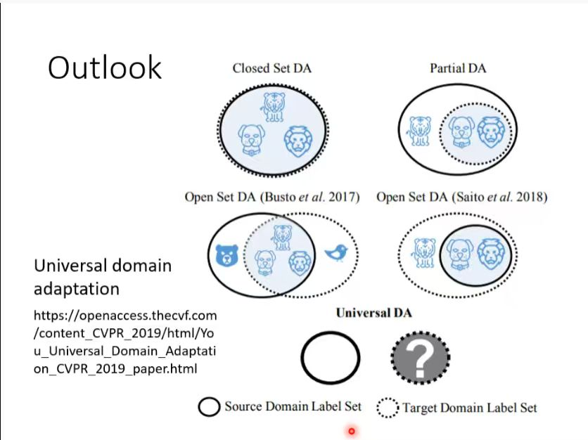
该幻灯片展示了领域适应技术随场景复杂度增加的演进路径：
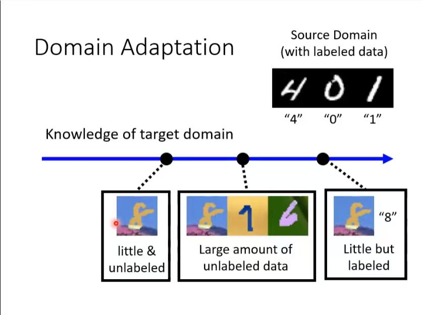
该幻灯片进一步完善了领域适应中目标域知识获取的连续谱系：
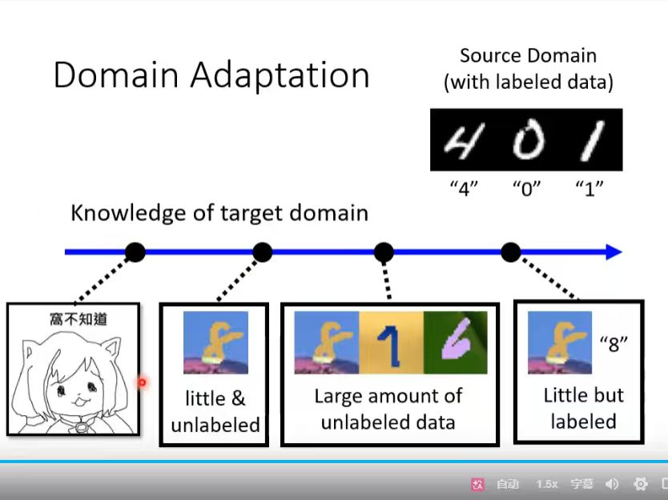
该幻灯片给出了领域适应中目标域知识获取的完整演进图：
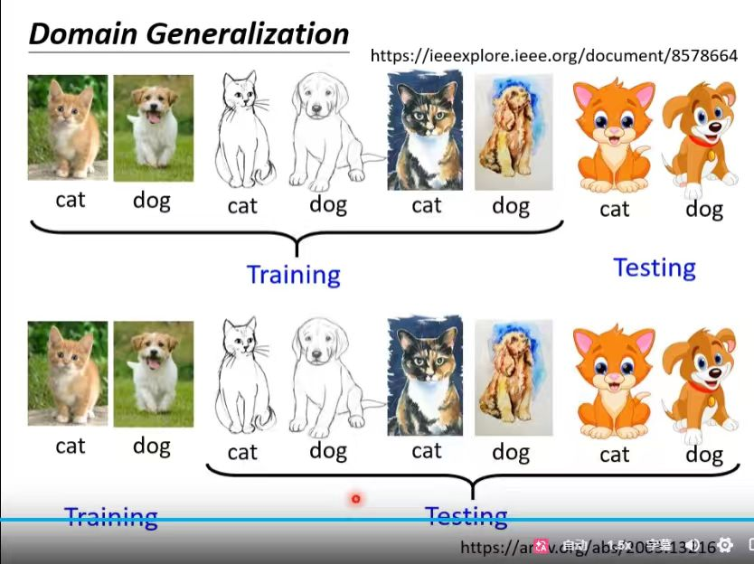
该幻灯片展示了比领域适应 (Domain Adaptation) 要求更高的 领域泛化 (Domain Generalization, DG)：